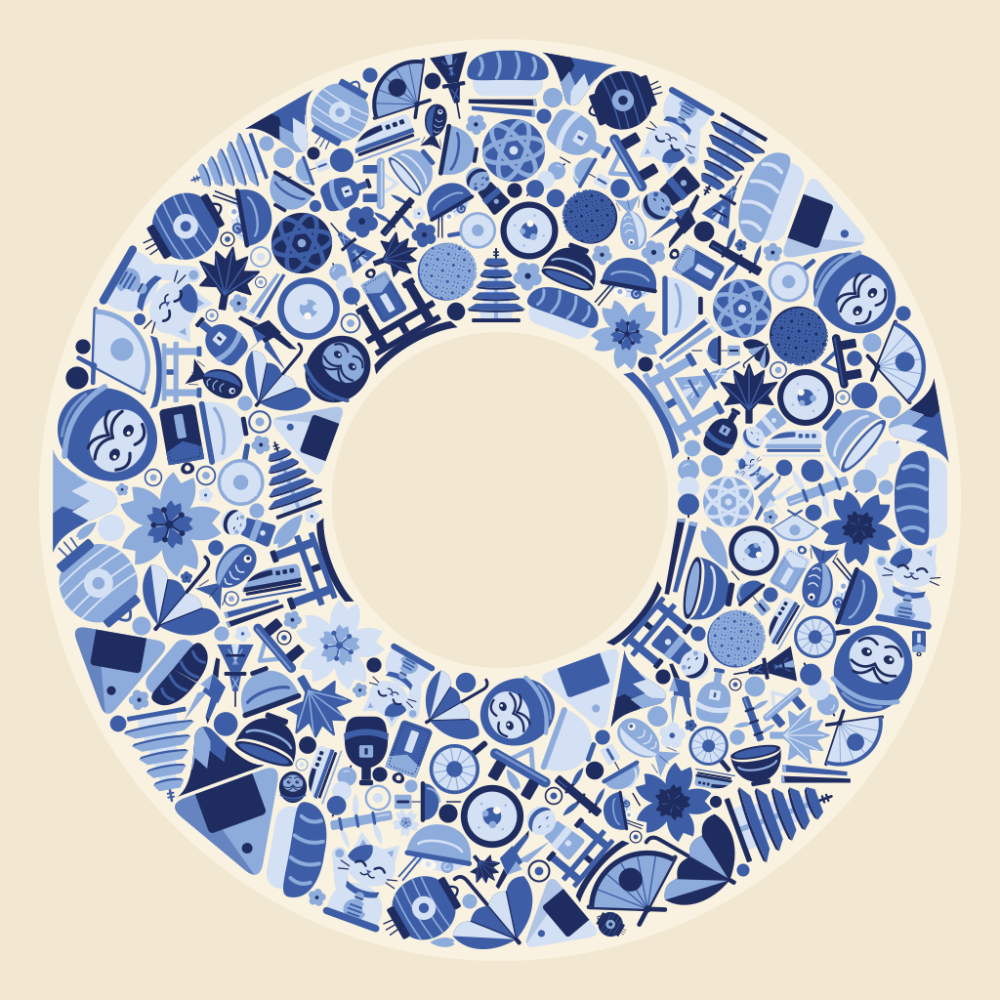
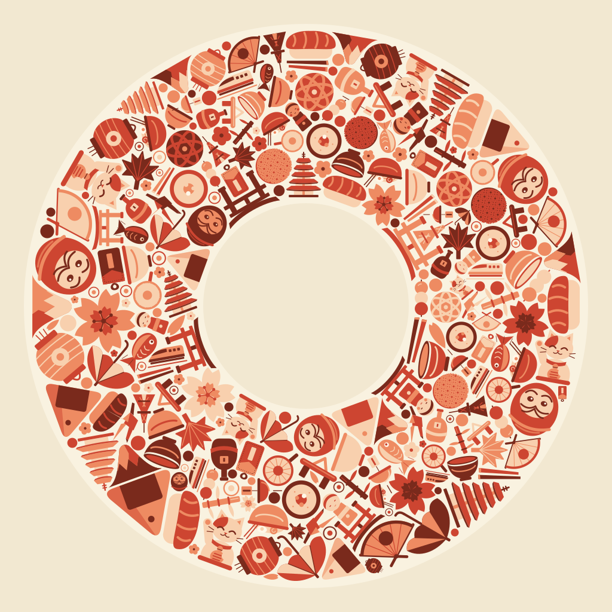
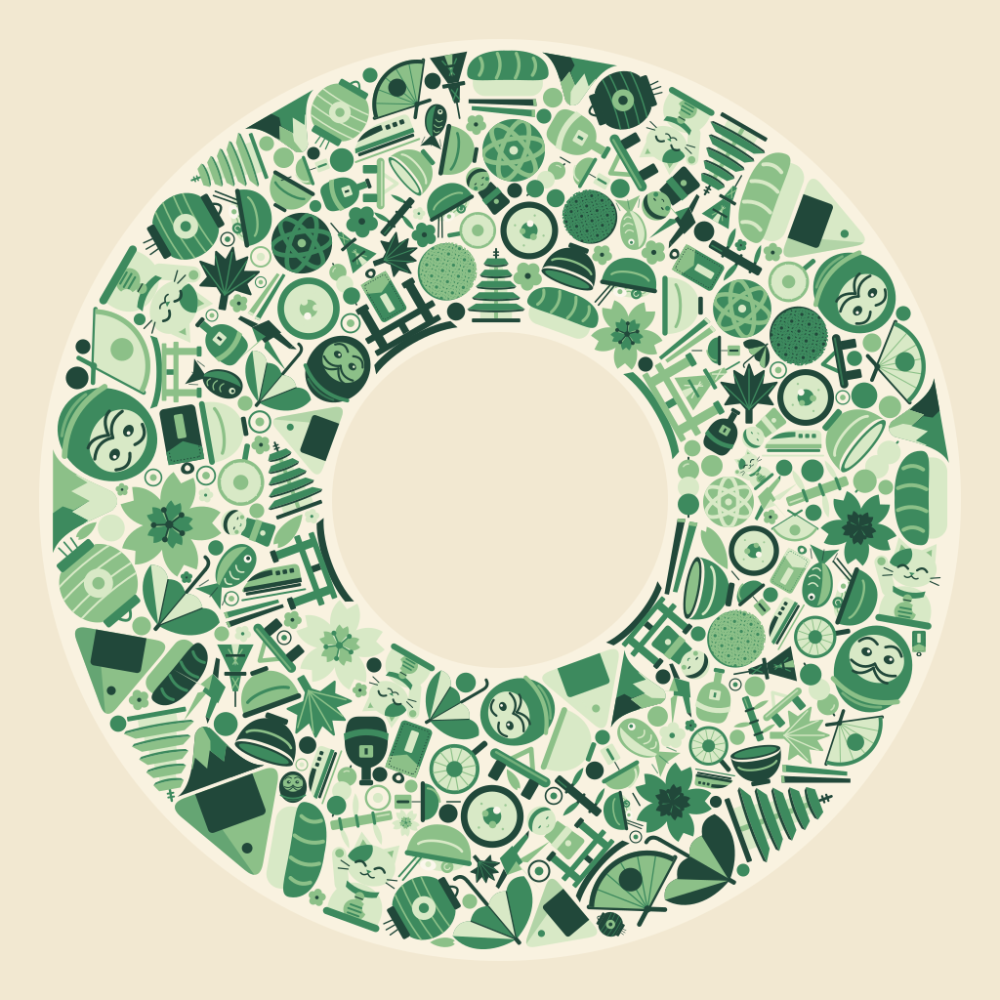
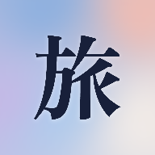
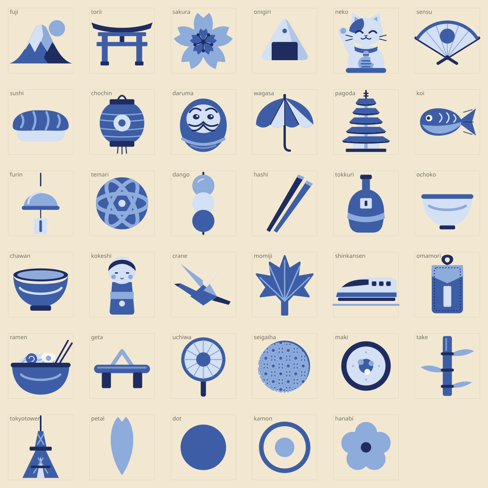

A 藍染 indigo
紺・藍・淺藍，像青花瓷。與 App 現在的墨藍文字、天空藍最接近。

↑ 放大看：貓、達摩、櫻花、鯉魚、扇子、拉麵…每片之間留約 4px 的縫。
B 朱 vermilion
朱・柿・桃。最有「日本」的第一印象。

C 抹茶 matcha
深綠・若竹・淡綠。最安靜，也和韓文版的橘紫不撞。

現行圖示（對照）

天空漸層＋一個「旅」字。
素材一覽（35 件，藍染版）
富士山、鳥居、櫻花、飯糰、招き猫、扇子、壽司、提燈、達摩、和傘、五重塔、鯉のぼり、風鈴、手毬、團子、筷子、德利、豬口杯、抹茶碗、こけし、折り鶴、楓葉、新幹線、御守、拉麵、下駄、團扇、青海波、海苔卷、竹、東京鐵塔，加上花瓣、日の丸、家紋、梅花四個補縫的小件。想加什麼、拿掉什麼，直接告訴我名字。
